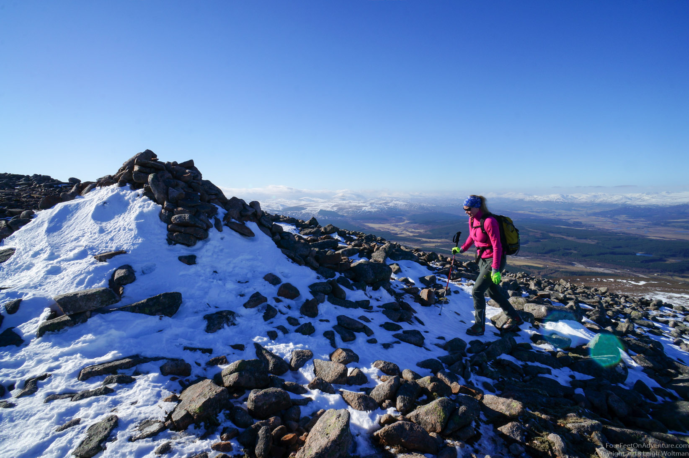
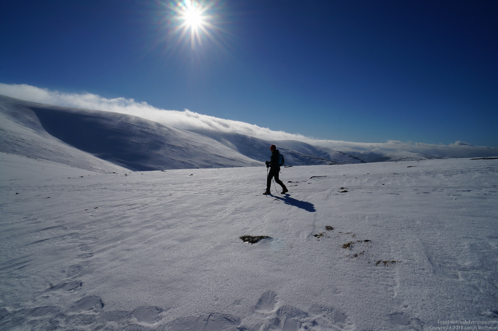
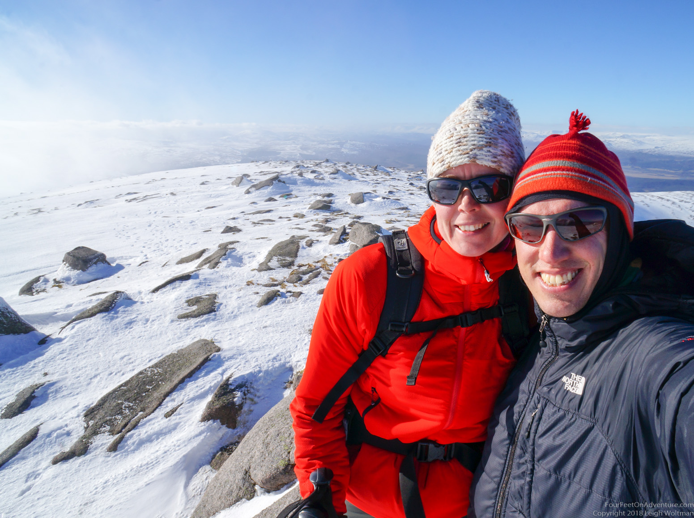
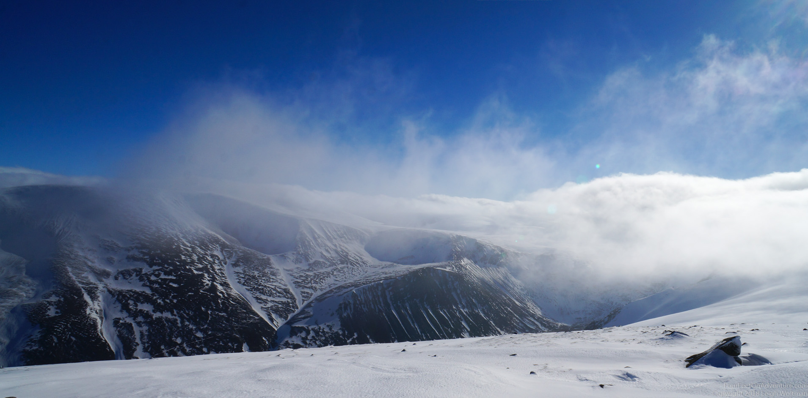
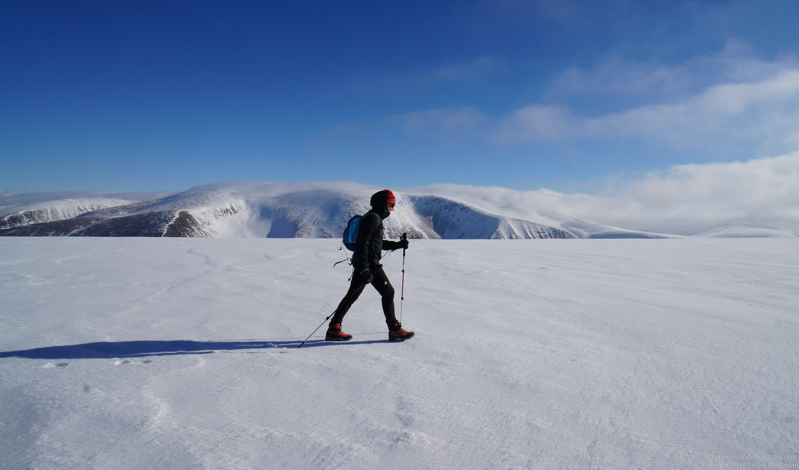
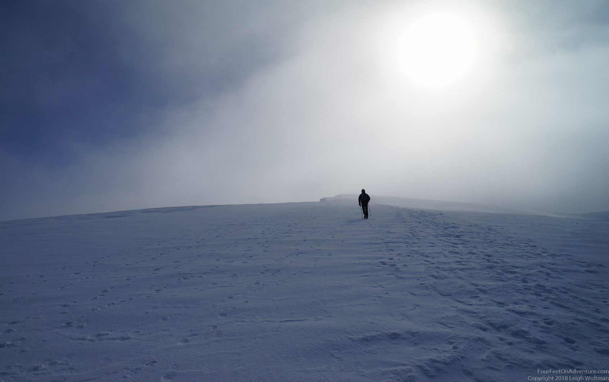
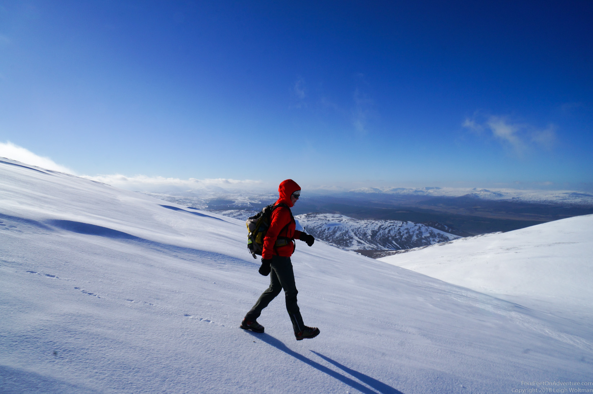
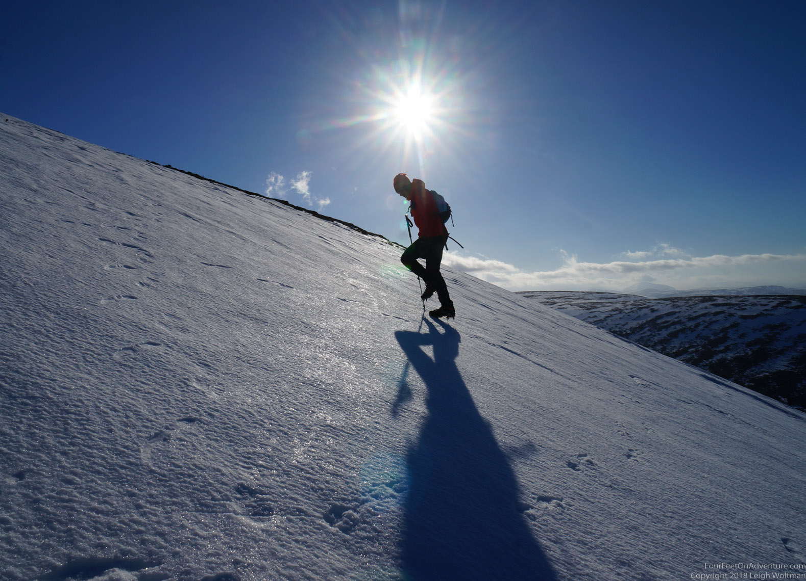
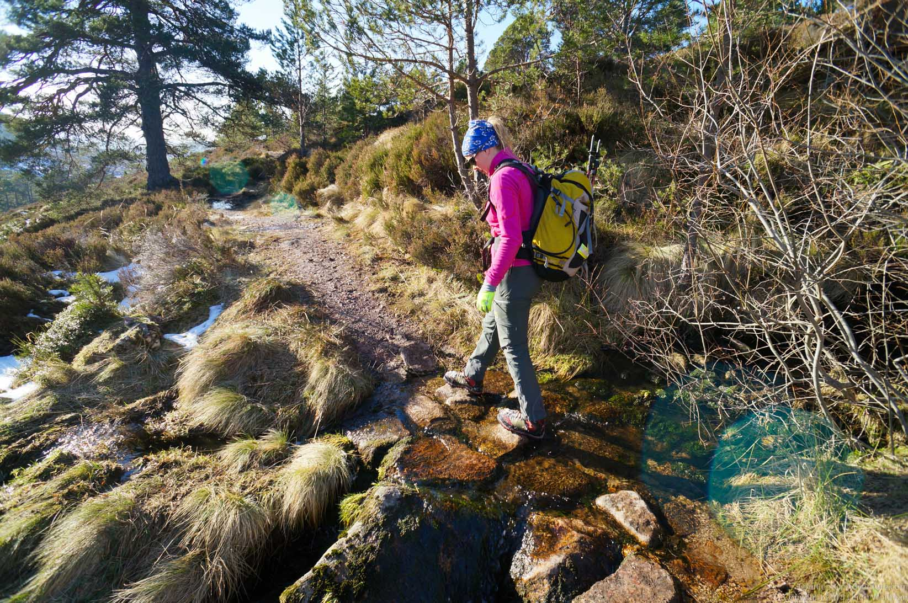
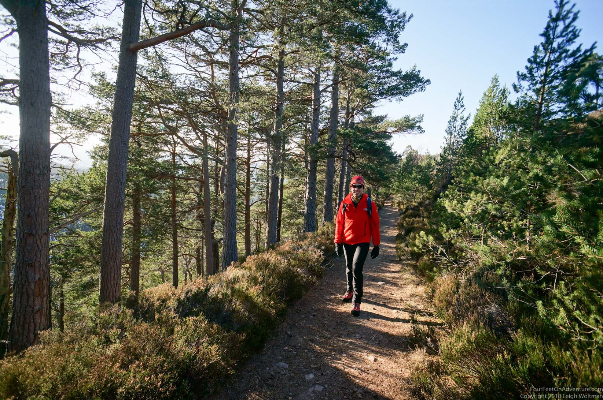

Where are we going? I’m driving, and I’m asking Leigh to tell me where we’re heading. Unfortunately, it takes him a good little while to pronounce these words. And, frankly, if I would ask him again, I’m not sure if I would hear the same. Definitely not going to be able to tell my colleagues where I went this weekend. ‘I went for a little hike,’ will probably do just fine.

The Cairngorms is a national park in the UK, about 45 minutes south from Inverness. It’s a high plateau about 1000-1200 m above sea level where a lot of outdoor stuff happens, like ice climbing, skiing and hill walking. On the western end lies Glen Feshie, a mountainous range (not sure if you call them mountains or hills here) that had 2 tops that would be the goal of today.

Funny detail, we went on a Cairngorm exploration tour after looking at a dog sledging race a couple of weeks ago, and drove into this road where we saw a car park and said to each other that it would be a good spot for a hike. Sure enough, didn’t one of our route-books have a hike right there… We parked, and walked up Gael-Cham, a 920m high peak that required passing over scree and our first snow fields.

Then there was a range of peaks with saddles in the middle which were having a little snow. Heading to the two big boys, Sgor Gaoith of 1111m and Sgor Gaoith of 1118 m it was snow packed. Sadly, we had no skis with us so had to walk down.

Where the ice field became icy and steep we put on the crampons. Hillwalking in Scotland in the winter requires an ice ax and crampons (and a jacket, which I forgot but luckily Leigh brought two). And I forgot the ice axes (we weren’t going climbing, so somehow it just slipped my mind that you could need those for walking), but Leigh's walking poles proved to be working just fine when Leigh did the bum-sliding test followed by a roll onto the belly and a walking stick arrest. Nice, right out of the books!

The top was a bit windy and cold, but had good views. Great, those sunny days in Scotland, what a view.




